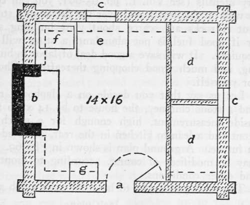

Chapter XIV. Cabin Building And Fitting Up
Description
This section is from the book "Camping And Woodcraft", by Horace Kephart. Also available from Amazon: Camping and Woodcraft.
Chapter XIV. Cabin Building And Fitting Up
Nobody knows what solid comfort means until he finds himself, snug and well fed, in a bit of a cabin, far away in the big sticks, while icy blasts rebound from his stanch roof and walls, to go howi-ing away through a famine-stricken wilderness, thwarted by a woodsman's providence and skill.
Open The Door
You are face-to-face with misery and death. Close it: the hearth-fire leaps, the kettle sings, you smoke contentedly, and all is well.
A tent, at best, is only a shelter: a cabin is a home. Log walls insure everything within against storms and prowling beasts. There are comfortable bunks for Partner and you, a table, benches and stools or chairs, a cupboard and bins with a good store of food, a chest or two, shelves and racks, a fireplace or stove. The weapons, tools, and utensils are hung just where they are handiest. Plenty of good wood is stacked in the dry. On wet days you can stay indoors without feeling cramped or jailed. And next season, when you come back again, how like an old friend the log hut twinkles welcome!
I shall describe only two types of simple one-room cabins, such as would be built by hunters or others who go pretty far back into the woods and require no more than a snug "home camp." For designs of more elaborate Structures, to be used as bummer homes in or near "civilization," the reader is referred to Kemp's Wilderness Homes (Outing Publishing Co., New York) and Wickes' Log Cabins (Forest and Stream Publishing Co., New York).
In the first example I will assume that there is a road or waterway to the camp site on which tools and some materials can be transported by wagon, boat, or raft; also that the cabin is to be large enough for four men, but planned to economize time and labor in construction, so that it may be finished in a week. You are supposed to hire a man with team to snake the logs in, unless enough suitable trees grow on the site itself.
Fig. 69. Log cabin (ground plan) a—door; b—fireplace, 4'; c, c—windows; d, d—bunks, 4Jx6f'; e—table, 3x4i'; f—grub chest, 2'x3'; g—wash stand, 1J'x2V; straight dotted lines indicate high shelves.
Decide beforehand what kind of roof you shall make. If it be of sawed shingles, or of roofing felt, then you must take along roof-boards as a foundation for them. A roof made simply of planks battened and painted will last several years without any covering, and it is easiest of all to build; but it is prone to warp or cup, under a summer sun, and then leak.
If roofing felt is used, carry along paint and brush to take the black "curse" off. Clapboards riven from neighboring trees are chosen in the present instance, as other methods of roofing are familiar to everybody. They call for no roof-boards, being nailed directly to the stringers (rafters that run parallel with the ridge). The way to make them has been described in Chapter XII.
A stone chimney, with fireplace not less than four feet wide, is ideal for heating a woodland home. Nothing is so jolly as an open fire of hardwood logs. With a Dutch oven or reflector, besides the ordinary utensils (see Vol. I., pp. 65-66), you can cook as well on the hearth and over the fire as in a stove. But if rocks are scarce about your building site, or if good fuel is not abundant, a stove will be required. It will save a good deal of labor in building, and much wood chopping thereafter. Choose for yourself.
Let us say that you decide on a clapboard roof and a stone chimney, the house to be 14 x 16 feet inside measurement, high enough for a porch in front and a lean-to kitchen in the rear, to be added in future. A ground plan is shown in Fig. 69. It may be modified, of course, according to frontage and other conditions.
The tools you ought to have for such a job are:
2 Axes, 2 Hatchets,
Crosscut saw (6 ft.) and handles, Peavey, or cant hook, Sledge hammer (8 lb.), 2 Steel wedges (5 lb.), Froe, Spade, Mattock, Hand saw, Rip saw, Compass saw, Brace,
3 Auger bits (3/8, 3/4, 1/4).. 2 Drill bits (1/8, 1/4), Drawing knife.
Jack plane,
Framing chisel (1*54),
Tape line,
2 ft. Rule,
Steel square,
Pocket level to screw on square, T-bevel, Plumb-bob, Chalk line and chalk, Qrosscut saw file, 2 Triangular files (7 in. and 6 in. slim taper)9 Mill file (8 in.), Whetstone, 50 ft. Rope (1 in.).
I have helped to build two clapboard-roofed cabins with fewer tools than these, but the others would have come in handy. We had no need for any not mentioned on this list. Some of these are used only in making furniture. All of the light tools except the square go in a carpenter's shoulder chest. The crosscut saw should be tied between two thin boards, as shipped from the factory.
Materials to be "carried in" are i^-in. planks for flooring, dressed on one side; %-in. planks, dressed on both sides, for door, casings, shutters, furniture, and shelving; 2 glazed window sashes, single; wire nails (40-d, iod, 6d), wrought nails for door and hinges; strap hinges for door and cupboard and chests; door-lock; 2 flat steel bars for fireplace lintel; round steel rod for "crane" in fireplace; heavy wire for pot-hooks. A screen door, and wire screen cloth for windows, will add greatly to comfort.
Site
Build where there is good natural drainage, and below a spring, or near some other source of water supply that is beyond suspicion. Cut away all trees that would shade the cabin except from the afternoon sun. Forest air is nearly always damp, and you need plenty of sunshine up to the noon hour. If you are in an original forest of tall trees, bear in mind that such do not root nearly so firmly as trees growing alone in exposed positions. When a tree of the ancient forest is left standing by itself in a clearing, it is easily overthrown by wind; so do not leave one of these near enough to the house that it might crush your cabin.
Continue to:
- prev: Tomahawk Shelters. Axemen's Camps. Caches. Masked Camps. Part 6
- Table of Contents
- next: Cabin Building And Fitting Up. Part 2